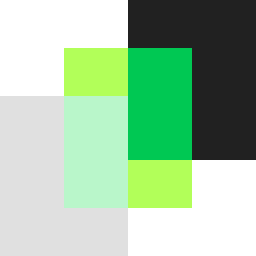
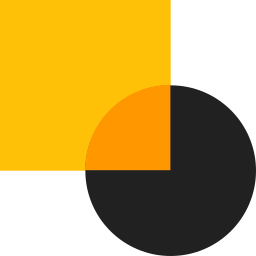
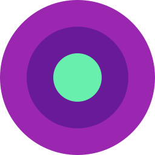

Bonito
Componha interfaces agrádaveis e personalizadas com o foco na experiência do usuário.
Leve
O framework Ion é um conjunto de leves arquivos que contém úteis ferramentas.
Rápido
Acelere o desenvolvimento do seu projeto com uma ferramenta que tem rápido desempenho.
Documentação
A documentação do Ion é uma coleção de textos, imagens e códigos dos componentes do framework apresentados de forma clara e de fácil entendimento.

Componentes
Os componentes do Material Design podem ser usados para criar belos aplicativos que empregam a experiência e a interface do usuário como ponto mais importante.

Personalização
As diretrizes de desenvolvimento do Material Design representam apenas a base para uma livre e customizável criação com seus próprios valores de design.
